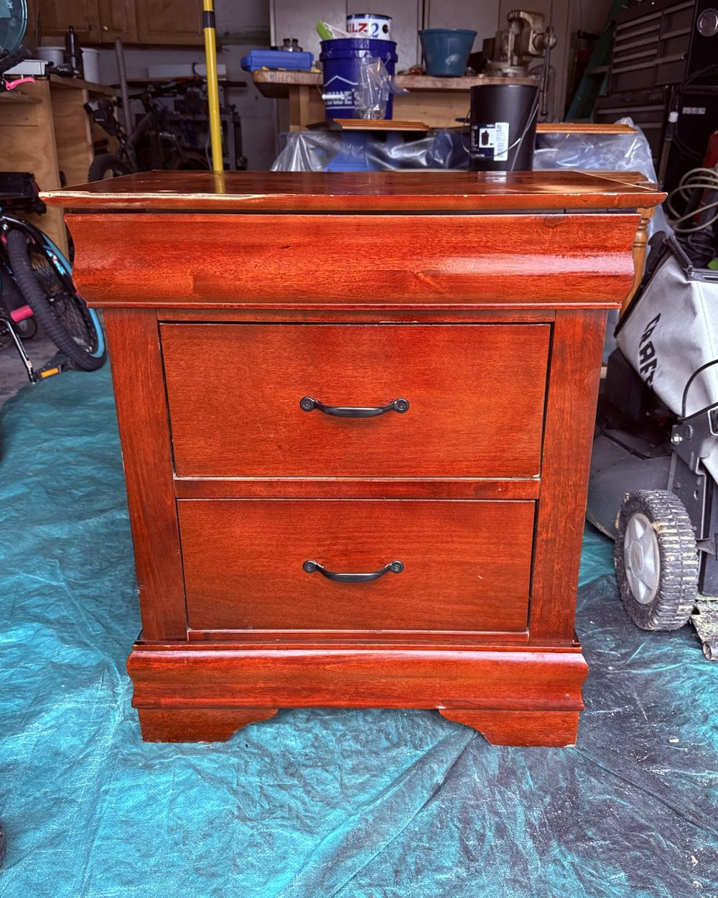
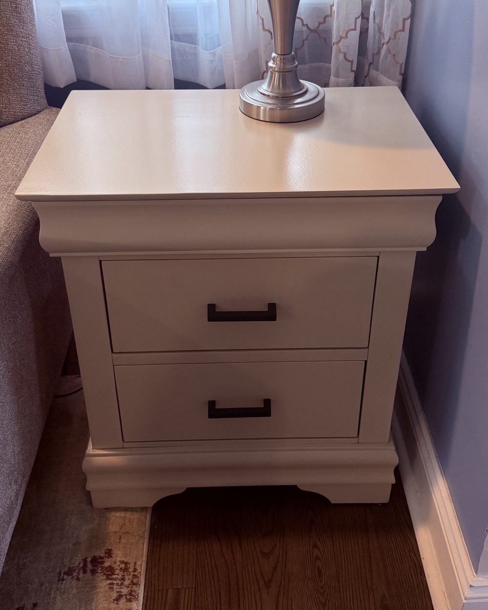

Two-Drawer Nightstand
A classic sleigh-style nightstand taken from dark cherry to a clean, soft white. Sanded smooth, primed, and sprayed for an even finish, then fitted with modern black bar pulls.
- Material
- Solid Wood
- Finish
- Soft white satin paint & new black hardware
- Status
- Follow Instagram for availability & pricing